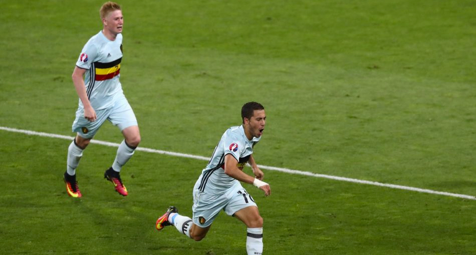
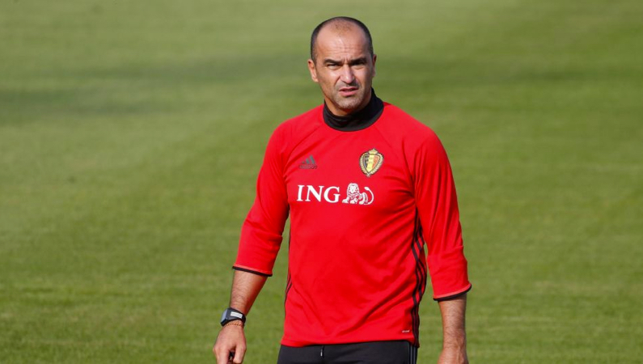

Кто будет тащить?
В начале 90-х в бельгийских семьях слишком мощно оттягивались, чтобы спустя 20 лет от звездности заявки футбольной сборной слепило глаза. В 2018-м у «красных дьяволов» настолько глубокий и топовый состав, что от зависти не скрыться даже в Италии и Германии. Роберто Мартинес располагает двумя-тремя равноценными игроками на каждую позицию, но на фоне остальных выделяются двое – Эден Азар и Кевин де Брёйне. Проще ограбить Центробанк, чем выделить среди парней главаря, поэтому наиболее верное решение – сложить их скиллы и генерировать единого сверхчеловека: связка Эден – Кевин легко зарубится за звание самой продуктивной на турнире.
 Эден Азар и Кевин де Брёйне - Getty ImagesНеудачи (вылет из ЛЧ и четверки АПЛ) и неопределенность клуба с тренером сказываются на настроении Эдена, который сделал в новом году всего 7+1 в 16 матчах, но есть вероятность, что выезд в сборную вернет волшебнику магию. Если это произойдет, то Азара никто не остановит.
Кто будет тащить?
За два года товарняков и официальных матчей против карликов у Бельгии выработался инстинкт насильника. Например, по итогам отборочного турнира «дьяволы» напихали соперникам 43 мяча (в среднем 4,3 за раз) и подпустили к себе по этому показателю только Германию (тоже 43). Остальные далеко позади. Именно такую бельгийцы применяли против эстоний и кипров (действовали 3-4-3). Их основная атакующая мощь сконцентрирована на флангах, где властвуют быстроногие и техничные ребята (как правило, Азар и Мертенс) при поддержке острых крайних защитников. На ЧМ противтоповых команд Роберто Мартинес вряд ли выберет тактику перемалывания противника малыми силами в обороне.
Если на ЧМ-2014 бельгийцы приехали молодой командой, которой сделали скидку на возраст, то теперь в случае провала отмазка точно не прокатит. Прокатит другая – неопытность тренера.
Сложности с попаданием в заявку возникнут у мегаперспективного (до недавнего времени) Аднана Янузая. У 23-летнего полузащитника с момента заключительного товарняка с Японией, который он посмотрел со скамейки, совсем не идет в «Сосьедаде». За последние три месяца Аднан несколько раз травмировался и накопил всего два гола и ассист – Мартинес в шоке, поэтому на ближайший матч Янузай отцеплен.
В чем проблемы?
Во второй раз Мартинесу фартануло во время жеребьевки квалификации ЧМ: из группы, где главным соперником бельгийцев стали греки, игроки легко вышли бы без тренера. Теперь перед Роберто задача намного серьезнее, и не факт, что он не провалится.
44-летний босс еще не выводил команду на матч с кем-то хотя бы из топ-15 рейтинга ФИФА (максимум – товарняк с Мексикой (17-е).
Мартинес знает, как бить малышей, но может поплыть против серьезного соперника, с которым расстановки игроков по позициям будет недостаточно.
Какое место займут, если ЧМ начнется завтра?
Если на ЧМ-2014 бельгийцы приехали молодой командой, которой сделали скидку на возраст, то теперь в случае провала отмазка точно не прокатит. Прокатит другая – неопытность тренера. Высшей карьерной точкой Роберто Мартинеса перед работой с «дьяволами» был «Эвертон», с которым он на эмоциях в первый сезон заскочил на пятую строчку АПЛ, а после не поднимался выше 11-й. Провал почему-то не отпугнул Бельгийскую федерацию, которая спасла коуча от падения обратно до уровня «Уигана».
 Эден Азар и Кевин де Брёйне - Getty ImagesБельгийцы гарантированно окажутся в восьмерке сильнейших – в этом нет сомнений ни у кого, кто взглянет на их предполагаемый путь. После выхода из группы (тут без вариантов) сетка плей-офф отправит звездных «дьяволов» на перевариваемые Японию, Польшу или Колумбию (Сенегал, прости). Но в 1/4 финала у парней Мартинеса Германия или Бразилия, которые поставят под сомнение их пребывание на турнире.